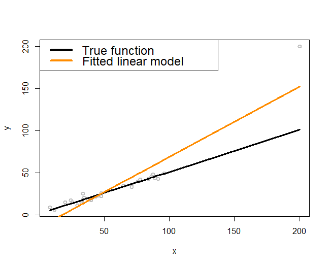
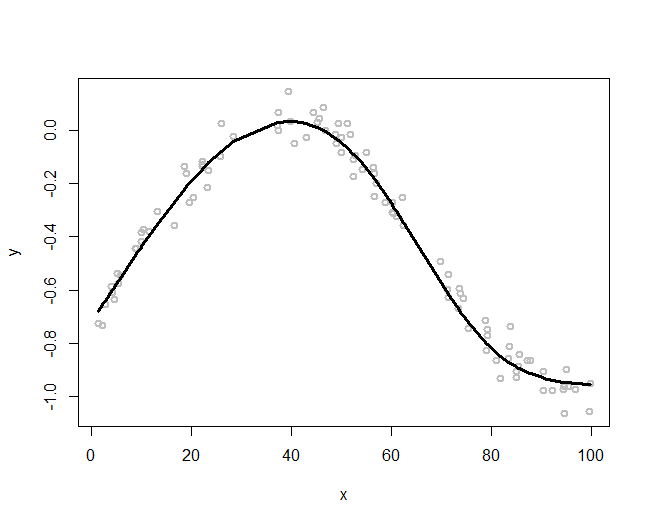
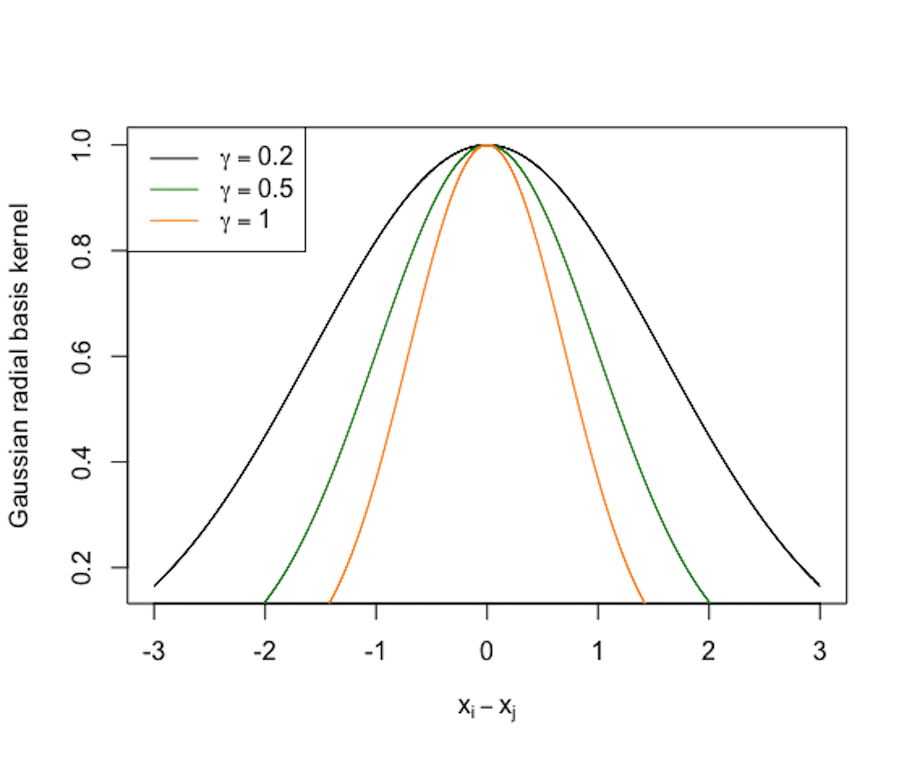
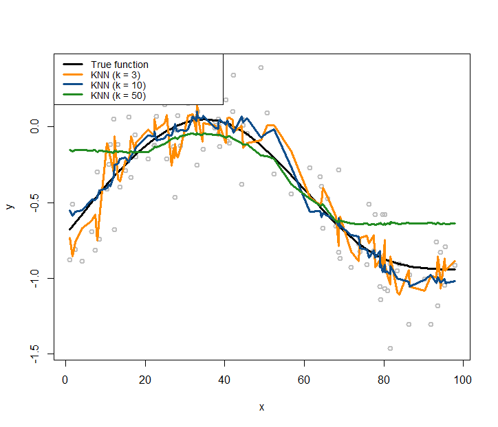

Kernel regression model
Rationale and formulation
Simple models, similar to the linear regression model, are like parents who tell white lies. A model is simple, not only in the sense that it looks simple, but also because it builds on assumptions that simplify reality. Among all the simple models, the linear regression model is particularly good at disguising its simplicity—it seems so natural that we often forget that its simplicity is its assumption. Simple in its cosmology, not necessary in its terminology—that is what the phrase simple model means229 In this sense, a model, regardless of how sophisticated its mathematical representation is, is a simple model if its assumptions simplify reality to such an extent that demands our leap of faith..
Figure 161: (Left) A single outlier (a local pattern) could impact the regression model as a whole; (right) a localized regression model (i.e., the curvature adapts to the locality instead of following a prescribed global form such as a straight line)
“Simple, but not simpler” said Albert Einstein.
One such assumption the linear regression model has made, obviously, is linearity. It would be OK in practice, as Figure ?? in Chapter 2 assures us: it is not perfect but it is a good approximation.
Now let’s look at Figure 161 (left). The true model, represented by the black line, is truly a line. But the fitted model, the orange line, deviates from the black line. In other words, even if the linearity assumption is correct, the consequence is not what we hope for.
The troublemaker appears to be the outlier located on the upper right corner of the figure. As discernible data scientists, we should be aware that the model is general, while the dataset at hand is particular. It is OK to say the outlier is the troublemaker, but note that this outlier is accidental. The real troublemaker is what enables the possibility of outlier to be a troublemaker. The real troublemaker lies deeper.
A common theme of the methods in this book is to establish certainty in a world of uncertainty. The linearity assumption is an assumption, since real data rarely give you a perfect straight line. The way it deals with uncertainty is to use the least squares principle for model estimation. It aims to look for a line that could pierce through all the data points. This makes each data point have a global impact: mentally move any data point in Figure 161 (left) up and down and imagine how the fitted orange line would move up and down accordingly. In other words, as a data point in any location could change the line dramatically, the linear regression model, together with its least squares estimation method, has imposed an even stronger assumption than merely linearity: it assumes that knowledge learned from one location would be universally useful to all other locations. This implicit assumption230 I.e., models that have made this assumption are often termed as global models. could be irrational in some applications, where the data points collected in one location may only tell information about that local area, not easily generalizable to the whole space. Thus, when the global models fail, we need local models231 A local model more relies on the data points in a neighborhood to build up the part of the curve that comes through that particular neighborhood. to fit the data, as shown in Figure 161 (right).
Theory and method
Suppose there are \(N\) data points, denoted as, \(\left(x_{n}, y_{n}\right)\) for \(n=1,2, \dots, N\). To predict on a point \(x^*\), a local model assumes the following structure
\[\begin{equation} y^* = \sum_{n=1}^{N} y_n w(x_n, x^*). \tag{98} \end{equation}\]
Here, \(w(x_n,x^*)\) is the weight function that characterizes the similarity between \(x^*\) and the training data points, \(x_n\), for \(n=1,2,\dots,N\). The idea is to predict on a data point based on the data points that are nearby. Methods differ from each other in terms of how they define \(w(x_n,x^*)\).
Roughly speaking, there are two main methods. One is the K-nearest neighbor (KNN) smoother , and another is the kernel smoother .
The KNN smoother. The KNN smoother defines \(w(x_n,x^*)\) as
\[w\left(x_{n}, x^{*}\right)=\left\{\begin{array}{l}{\frac{1}{k}, \text { if } x_{n} \text { is one of the } k \text { nearest neighbors of } x^{*}}; \\ {0, \text { if } x_{n} \text { is NOT among the } k \text{ nearest neighbors of } x^{*}}.\end{array}\right.\]
Here, to define the nearest neighbors of a data point, a distance function is needed. Examples include the Euclidean232 E.g., \(d\left(\boldsymbol{x}_n, \boldsymbol{x}_m\right) = \sqrt {\sum _{i=1}^{p} \left( x_{ni}-x_{mi}\right)^2 }\)., Mahalanobis, and Cosine distance functions. What distance function to use depends on the characteristics of the data. Model selection methods such as the cross-validation can be used to select the best distance function for a dataset.
Figure 162: Three KNN smoother models (\(k=1\), \(k=2\), and \(k=6\))

Consider a data example as shown in Table 46. A visualization of the data points is shown in Figure 162, i.e., the gray data points.
Table 46: Example of a dataset with \(6\) data points
| ID | \(x\) | \(y\) |
|---|---|---|
| \(1\) | \(0\) | \(1\) |
| \(2\) | \(1\) | \(3\) |
| \(3\) | \(2\) | \(5\) |
| \(4\) | \(3\) | \(6\) |
| \(5\) | \(4\) | \(9\) |
| \(6\) | \(5\) | \(10\) |
Let’s build \(3\) KNN smoother models (e.g., \(k=1\), \(k=2\), and \(k=6\)) and use the Euclidean distance function to identify the nearest neighbors of a data point. Results are presented in Tables 47, 48, and 49, respectively. Note that, in this dataset, as there are in total \(6\) data points, the KNN model with \(k=6\) is the same as the trivial model that uses the average of \(y\) as predictions for all data points.
Table 47: Predictions by a KNN smoother model with \(k=1\) on some locations of \(x^*\)
| \(x^*\) | KNN | \(y^*\) |
|---|---|---|
| \(0.4\) | \(x_1\) | \(y_1\) |
| \(1.6\) | \(x_3\) | \(y_3\) |
| \(3.2\) | \(x_4\) | \(y_4\) |
| \(4.8\) | \(x_6\) | \(y_6\) |
Table 48: Predictions by a KNN smoother model with \(k=2\) on some locations of \(x^*\)
| \(x^*\) | KNN | \(y^*\) |
|---|---|---|
| \(0.4\) | \(x_1\), \(x_2\) | \((y_1 + y_2)/2\) |
| \(1.6\) | \(x_2\), \(x_3\) | \((y_2 + y_3)/2\) |
| \(3.2\) | \(x_4\), \(x_5\) | \((y_4 + y_5)/2\) |
| \(4.8\) | \(x_5\), \(x_6\) | \((y_5 + y_6)/2\) |
Table 49: Predictions by a KNN smoother model with \(k=6\) on some locations of \(x^*\)
| \(x^*\) | KNN | \(y^*\) |
|---|---|---|
| \(0.4\) | \(x_1\)-\(x_6\) | \(\sum_{n=1}^{6} y_n/6\) |
| \(1.6\) | \(x_1\)-\(x_6\) | \(\sum_{n=1}^{6} y_n/6\) |
| \(3.2\) | \(x_1\)-\(x_6\) | \(\sum_{n=1}^{6} y_n/6\) |
| \(4.8\) | \(x_1\)-\(x_6\) | \(\sum_{n=1}^{6} y_n/6\) |
The \(3\) KNN smoother models are also shown in Figure 162.
A distinct feature of the KNN smoother is the discrete manner to define the similarity between data points, which is, for any data point \(x^*\), the data point \(x_n\) is either a neighbor or not. The KNN smoother only uses the \(k\) nearest neighbors of \(x^*\) to predict \(y^*\). This discrete manner of the KNN smoother results in the serrated curves shown in Figure 162. This is obviously artificial, pointing out a systematic bias imposed by the KNN smoother model.
The kernel smoother. To remove this bias, the kernel smoother creates continuity in the similarity between data points. A kernel smoother defines \(w(x_n,x^* )\) in the following manner
\[w\left(x_{n}, x^{*}\right)=\frac{K\left(x_{n}, x^{*}\right)}{\sum_{n=1}^{N} K\left(x_{n}, x^{*}\right)}.\]
Here, \(K\left(x_{n}, x^{*}\right)\) is a kernel function as we have discussed in Chapter 7. There have been many kernel functions developed, for example, as shown in Table 50 .
Table 50: Some kernel functions used in machine learning
| Kernel Function | Mathematical Form | Parameters |
|---|---|---|
| Line | \(K(\boldsymbol{x}_i, \boldsymbol{x}_j) = \boldsymbol{x}_i^T\boldsymbol{x}_j\) | null |
| Polynomial | \(K(\boldsymbol{x}_i, \boldsymbol{x}_j)= \left(\boldsymbol{x}_i^T\boldsymbol{x}_j + 1\right)^q\) | \(q\) |
| Gaussian radial basis | \(K(\boldsymbol{x}_i, \boldsymbol{x}_j) = e^{-\gamma\Vert \boldsymbol{x}_i - \boldsymbol{x}_j\Vert^2}\) | \(\gamma \geq 0\) |
| Laplace radial basis | \(K(\boldsymbol{x}_i, \boldsymbol{x}_j) = e^{-\gamma\Vert \boldsymbol{x}_i - \boldsymbol{x}_j\Vert}\) | \(\gamma \geq 0\) |
| Hyperbolic tangent | \(K(\boldsymbol{x}_i, \boldsymbol{x}_j) = tanh(\boldsymbol{x}_i^T\boldsymbol{x}_j+b)\) | b |
| Sigmoid | \(K(\boldsymbol{x}_i, \boldsymbol{x}_j) = tanh(a\boldsymbol{x}_i^T\boldsymbol{x}_j+b)\) | a,b |
| Bessel function | \(K(\boldsymbol{x}_i, \boldsymbol{x}_j) = \frac{bessel_{v+1}^n(\sigma\Vert \boldsymbol{x}_i - \boldsymbol{x}_j \Vert)}{\left(\Vert \boldsymbol{x}_i -\boldsymbol{x}_j \Vert\right)^{-n(v+1)}}\) | \(\sigma, n,v\) |
| ANOVA radial basis | \(K(\boldsymbol{x}_i, \boldsymbol{x}_j) = \left( \sum_{k=1}^n e^{-\sigma\left(x_i^k - x_j^k\right)}\right)^d\) | \(\sigma, d\) |
Many kernel functions are smooth functions. To understand a kernel function, using R to draw it is a good approach. For example, the following R code draws a few instances of the Gaussian radial basis kernel function and shows them in Figure 163. The curve illustrates how the similarity smoothly decreases when the distance between the two data points increases. And the bandwidth parameter \(\gamma\) controls the rate of decrease, i.e., the smaller the \(\gamma\), the less sensitive the kernel function to the Euclidean distance of the data points (measured by \(\Vert \boldsymbol{x}_i - \boldsymbol{x}_j\Vert^2\)).
 Figure 163: Three instances of the Gaussian radial basis kernel function (\(\gamma=0.2\), \(\gamma=0.5\), and \(\gamma=1\))
# Use R to visualize a kernel function
require(latex2exp) # enable the use of latex in R graphics
# write a function for the kernel function
gauss <- function(x,gamma) exp(- gamma * x^2)
x <- seq(from = -3, to = 3, by = 0.001)
plot(x, gauss(x,0.2), lwd = 1, xlab = TeX('$x_i - x_j$'),
ylab="Gaussian radial basis kernel", col = "black")
lines(x, gauss(x,0.5), lwd = 1, col = "forestgreen")
lines(x, gauss(x,1), lwd = 1, col = "darkorange")
legend(x = "topleft",
legend = c(TeX('$\\gamma = 0.2$'), TeX('$\\gamma = 0.5$'),
TeX('$\\gamma = 1$')),
lwd = rep(4, 4), col = c("black",
"darkorange","forestgreen"))R Lab
The 6-Step R Pipeline. Step 1 and Step 2 get the dataset into R and organize it in required format.
# Step 1 -> Read data into R workstation
library(RCurl)
url <- paste0("https://raw.githubusercontent.com",
"/analyticsbook/book/main/data/KR.csv")
data <- read.csv(text=getURL(url))
# str(data)
# Step 2 -> Data preprocessing
# Create X matrix (predictors) and Y vector (outcome variable)
X <- data$x
Y <- data$y
# Create a training data
train.ix <- sample(nrow(data),floor( nrow(data) * 4/5) )
data.train <- data[train.ix,]
# Create a testing data
data.test <- data[-train.ix,]Step 3 creates a list of models. For a kernel regression model, important decisions are made on the kernel function and its parameter(s). For example, here, we create two models with two kernel functions and their parameters:
# Step 3 -> gather a list of candidate models
# model1: ksmooth(x,y, kernel = "normal", bandwidth=10)
# model2: ksmooth(x,y, kernel = "box", bandwidth=5)
# model3: ...Step 4 uses cross-validation to evaluate the candidate models to identify the best model.
# Step 4 -> Use 5-fold cross-validation to evaluate the models
n_folds = 10 # number of fold
N <- dim(data.train)[1]
folds_i <- sample(rep(1:n_folds, length.out = N))
# evaluate model1
cv_mse <- NULL
for (k in 1:n_folds) {
test_i <- which(folds_i == k)
data.train.cv <- data.train[-test_i, ]
data.test.cv <- data.train[test_i, ]
require( 'kernlab' )
model1 <- ksmooth(data.train.cv$x, data.train.cv$y,
kernel = "normal", bandwidth = 10,
x.points=data.test.cv[,1])
# (1) Fit the kernel regression model with Gaussian kernel
# (argument: kernel = "normal") and bandwidth = 0.5; (2) There is
# no predict() for ksmooth. Use the argument
# "x.points=data.test.cv" instead.
y_hat <- model1$y
true_y <- data.test.cv$y
cv_mse[k] <- mean((true_y - y_hat)^2)
}
mean(cv_mse)
# evaluate model2 using the same script above
# ... The result is shown below
# [1] 0.2605955 # Model1
# [1] 0.2662046 # Model2Step 5 builds the final model.
# Step 5 -> After model selection, use ksmooth() function to
# build your final model
kr.final <- ksmooth(data.train$x, data.train$y, kernel = "normal",
bandwidth = 10, x.points=data.test[,1]) # Step 6 uses the final model for prediction.
# Step 6 -> Evaluate the prediction performance of your model
y_hat <- kr.final$y
true_y <- data.test$y
mse <- mean((true_y - y_hat)^2)
print(mse)This pipeline could be easily extended to KNN smoother model, i.e., using the knn.reg in the FNN package.
Simulation Experiment. We have created a R script in Chapter 5 to simulate data from nonlinear regression models. Here, we use the same R script as shown below.
# Simulate one batch of data
n_train <- 100
# coefficients of the true model
coef <- c(-0.68,0.82,-0.417,0.32,-0.68)
v_noise <- 0.2
n_df <- 20
df <- 1:n_df
tempData <- gen_data(n_train, coef, v_noise)The simulated data are shown in Figure 164 (i.e., the gray data points).
Figure 164: Kernel regression models with different choices on the bandwidth parameter (\(\gamma\)) of the Gaussian radial basis kernel function

The following R code overlays the true model, i.e., as the black curve, in Figure 164.
# Plot the true model
plot(y ~ x, col = "gray", lwd = 2)
lines(x, X %*% coef, lwd = 3, col = "black")Let’s use the kernel regression model to fit the data. We use the Gaussian radial basis kernel function, with three different choices of the bandwidth parameter (\(\gamma\)), i.e., (\(\gamma = 2\), \(\gamma = 5\), \(\gamma = 15\)). Then we overlay the three fitted kernel regression models in Figure 164 using the following R code.
lines(ksmooth(x,y, "normal", bandwidth=2),lwd = 3,
col = "darkorange")
lines(ksmooth(x,y, "normal", bandwidth=5),lwd = 3,
col = "dodgerblue4")
lines(ksmooth(x,y, "normal", bandwidth=15),lwd = 3,
col = "forestgreen")
legend(x = "topright",
legend = c("True function", "Kernel Reg (bw = 2)",
"Kernel Reg (bw = 5)", "Kernel Reg (bw = 15)"),
lwd = rep(3, 4),
col = c("black","darkorange","dodgerblue4","forestgreen"),
text.width = 32, cex = 0.85)As shown in Figure 164, the bandwidth parameter determines how smooth are the fitted curves: the larger the bandwidth, the smoother the regression curve233 Revisit Figure 163 and connect the observations made in both figures, i.e., which one in Figure 163 leads to the smoothest curve in Figure 164 and why?.
Similarly, we can use the same simulation experiment to study the KNN smoother model. We build three KNN smoother models with \(k=3\), \(k=10\), and \(k=50\), respectively.
# install.packages("FNN")
require(FNN)
## Loading required package: FNN
xy.knn3<- knn.reg(train = x, y = y, k=3)
xy.knn10<- knn.reg(train = x, y = y, k=10)
xy.knn50<- knn.reg(train = x, y = y, k=50)Similar to Figure 164, we use the following R code to draw Figure 165 that contains the true model, the sampled data points, and the three fitted models.
Figure 165: KNN regression models with different choices on the number of nearest neighbors
# Plot the data
plot(y ~ x, col = "gray", lwd = 2)
lines(x, X %*% coef, lwd = 3, col = "black")
lines(x, xy.knn3$pred, lwd = 3, col = "darkorange")
lines(x, xy.knn10$pred, lwd = 3, col = "dodgerblue4")
lines(x, xy.knn50$pred, lwd = 3, col = "forestgreen")
legend(x = "topleft",
legend = c("True function", "KNN (k = 3)",
"KNN (k = 10)", "KNN (k = 50)"),
lwd = rep(3, 4),
col = c("black", "darkorange", "dodgerblue4",
"forestgreen"),
text.width = 32, cex = 0.85)Comparing Figures 164 and 165, it seems that the curve of the kernel regression model is generally smoother than the curve of a KNN model. This observation relates to the discrete manner the KNN model employs, while the kernel model uses smooth kernel functions that introduce smoothness and continuity into the definition of the neighbors of a data point (thus no hard thresholding is needed to classify whether or not a data point is a neighbor of another data point).
With a smaller \(k\), the fitted curve by the KNN smoother model is less smooth. This is because a KNN smoother model with a smaller \(k\) predicts on a data point by relying on fewer data points in the training dataset, ignoring information provided by the other data points that are considered far away234 What about a linear regression model? When it predicts on a given data point, does it use all the data points in the training data, or just a few local data points?.
In terms of model complexity, the smaller the parameter \(k\) in the KNN model, the larger the complexity of the model. Most beginners think of the opposite when they first encounter this question.